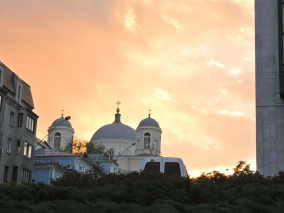
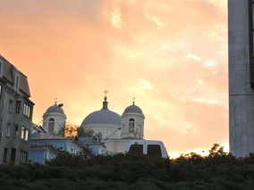
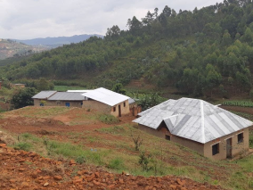
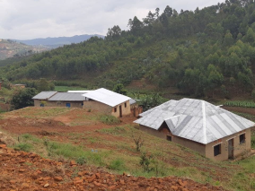

Conoce un poco mejor los lugares de los que proceden tus colegas en línea
Todo ser humano es un artista, un ser de la libertad, llamado a participar en la transformación y reforma de las condiciones, el pensamiento y las estructuras que conforman e influyen en nuestras vidas.
La ciudad de Practicum ha reunido a profesionales de diferentes rincones del mundo. Hoy, la Galería de Arte Practicum se enorgullece de presentar historias y fotografías de algunas de las personas que dedican su tiempo y esfuerzo a hacer que los futuros profesionales de la tecnología de esta ciudad se sientan como en casa. Cada uno de nosotros tiene una historia única sobre el lugar del que procede. No dudes en añadir a nuestra colección tu propia historia y una obra de arte visual dedicada a tu ciudad natal. No importa de dónde seas, nos alegra que seas nuestro vecino.

 



 

Kiev, Ucrania
Kiev (o Kyiv), la capital de Ucrania, es una gran ciudad situada a orillas del río Dniéper. Por supuesto, nadie en su sano juicio se bañaría en el río, a menos que se haya criado aquí, en cuyo caso probablemente lo haya intentado en algún momento. Los veranos son calurosos aquí, y los inviernos con fuertes corrientes de aire, pero el otoño y la primavera son absolutamente increíbles.
La ciudad en sí es una mezcla de arquitectura prerrevolucionaria, de posguerra y soviética, toda ella salpicada de balcones modificados. Si te encuentras en la orilla derecha del Dniéper, el paisaje es difícil de atravesar para las personas en bicicleta y las que llevan tacones. Sin embargo, la orilla izquierda es considerada mucho menos interesante y prestigiosa, incluso por la gente que vive en las afueras de la derecha.